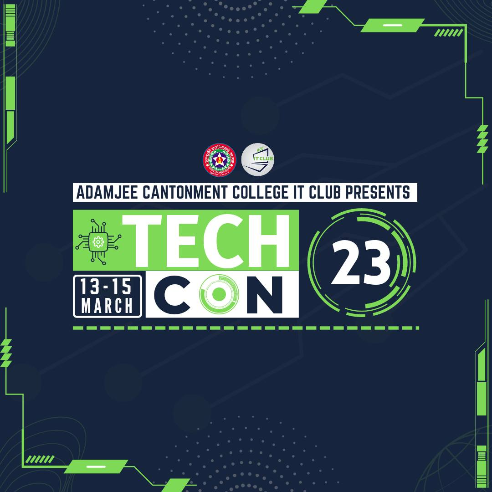

The word “competition” is a stress giving word for everyone. Everyone is scared of competition. Yes! competition is a hurdle in the journey to success. Nevertheless, it is an important element that makes the journey interesting. Is not it true? Competition is an activity which has always been there but it is growing in this modern world. Most people consider it a negative thing but It has a positive side too. Don’t you know about this positive side? Don’t worry! After listening to this speech you will be amazed to know the benefits of competition. Just think, If you are asked to give an examination in which you are the only participant. What rank will you get? If you think you are going to get the first rank, you are right and wrong at the same time. Because even if you get the first rank, the last rank is also assigned to you. Right! Now, let’s explore the benefits of competition and figure out how competition can help you progress in the field you are in. Competition motivates us to get out of our comfort zone and discover our hidden talents and skills. Apart from that, it evokes creativity in us so that we can do something new and unique to stand out in the crowd. Most Importantly, competition helps us analyse our weaknesses and strengths. This way we get to know about the position we are currently standing on. Even though competition scares you, it is the most important factor for growth. It helps us scale our weaknesses and strengths so that we can act accordingly. So I wish you all are participating in TECH_CON
